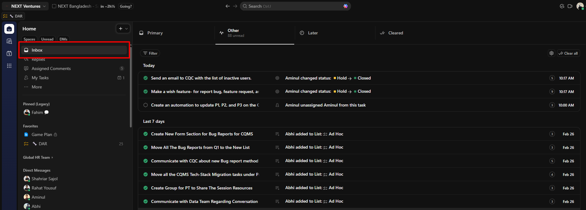
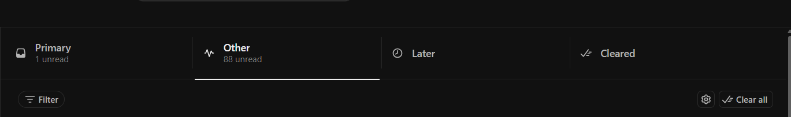
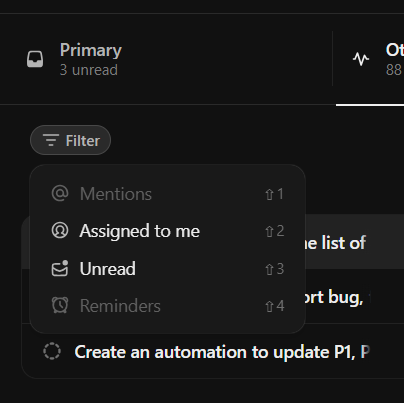
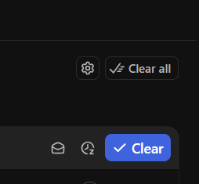
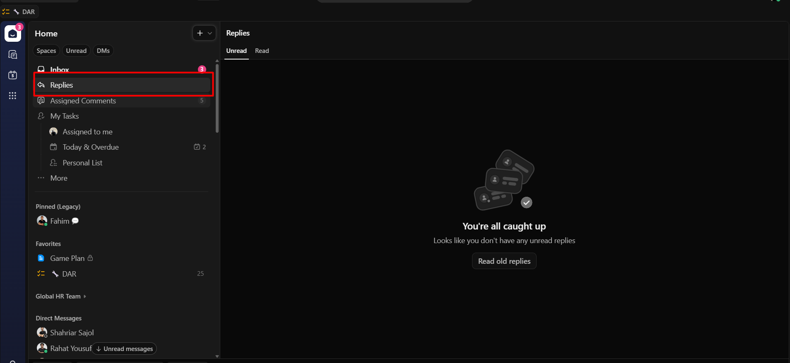
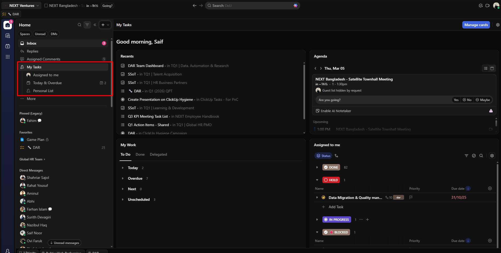
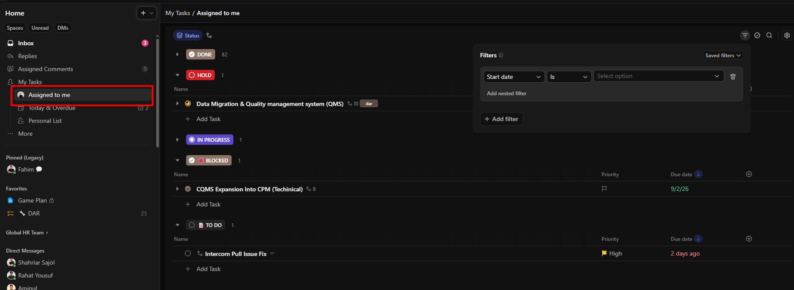

NEXT Ventures
Structure, visibility, and clean workflows for the whole organization.
We use ClickUp to manage teams, departments, and people, but without a clear structure and top-level visibility, it’s hard to see what’s happening across the organization.
This campaign walks you through specific features: what they are, how to use them, and how to keep your ClickUp clean and structured.
Section 1
The Inbox is your go-to place for task updates, not for chat or email messages.
Many people mistake it for a general “inbox” (like email or DMs). In ClickUp, the Inbox is where you see activity on your tasks: status changes, assignments, comments, and updates, all in one feed.


Use the tabs to triage: keep Primary for what needs action now, move the rest to Later or Cleared so your Inbox stays manageable.


Section 2
Replies shows all replies to ClickUp Chat threads you follow in one place.
It's part of ClickUp Chat (built-in messaging, channels, and threads), not task comments or Inbox. You see it in the Home sidebar. Use it to stay on top of thread conversations so nothing gets missed and your unread count stays manageable.

Aim for "You're all caught up" on Unread. Check Replies regularly so your Chat thread follow-ups don't pile up.
Section 3
My Tasks (formerly Home) is your central hub to view and manage work assigned to you.
It's a canvas where you see cards like Recents, Agenda, My Work, and Assigned to me. Open it from the sidebar under Home. Use it daily so your workload stays visible and nothing slips through.


Assigned to me (most important)
Shows all tasks assigned to you, sorted by due date. Create tasks (they're auto-assigned to you), update status, edit, filter, group, and search. Use "Show closed" to see completed tasks. Group by status (e.g. In Progress, Blocked, Done) to prioritize.
Filter option: Click Filters (top right of the Assigned to me card) to open the Filters panel. Narrow the list by start date, due date, assignee, status, priority, and more. You can add multiple filters, use nested filters, and save filter sets for quick reuse.
My Work card (on the page) breaks your to-dos into Today, Overdue, Next, and Unscheduled under the To Do tab; use Done and Delegated for completed and delegated items.
Use Inbox, Replies, and My Tasks every day to keep your work visible and your ClickUp clean.
ClickUp Hygiene Campaign · NEXT Ventures